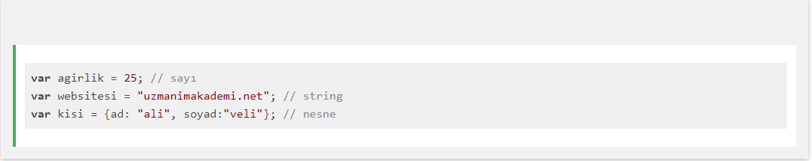
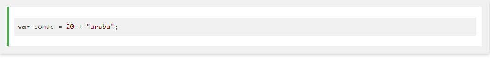
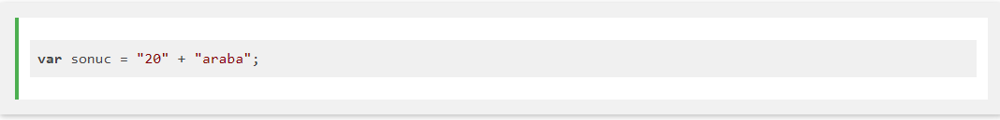
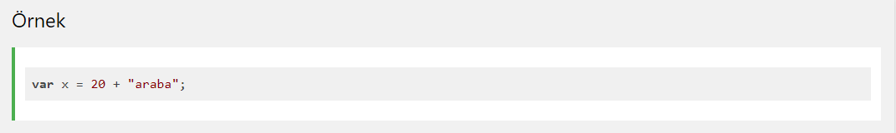
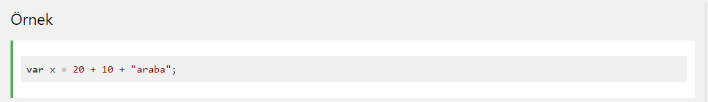
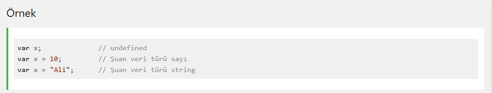
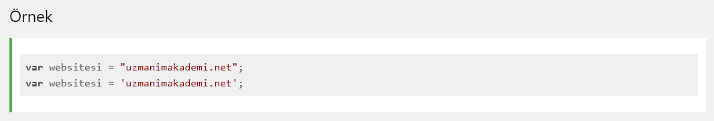
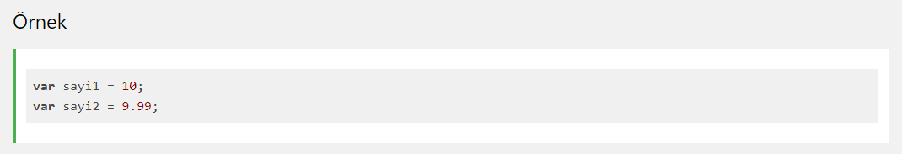

İnsanlardan farklı olarak bilgisayarlar, 1234 ve abcd arasındaki farkı anlayamazlar. Yani hangisi sayı, hangisi metin bunu ayırt edemezler.
Veri türü, değişkenler içinde saklanacak verinin türüne göre sınıflandırılmasıdır. Veri türleri her programla dili için oldukça önemli bir kavramdır.
Bir uygulama geliştirirken değişken içinde saklanan verinin türünü önceden belirtiriz. Böylece bilgisayar verinin saklanacağı bellek alanını buna göre ayırır.

Veri türü programlamada önemli bir kavramdır. Sadece JavaScript'e özel bir ifade değildir. Bir değişken üzerinde işlem yaparken onun veri türünü bilmemiz gerekir.
Veri türleri olmadan aşağıdaki gibi işlemleri bilgisayar çözemez:

Yukarıdaki işlem mantıklı bir işlem değildir. Matematik derslerinde hocaların dediği gibi elma ile armutu toplayamazsınız.
Yukarıdaki işlem hata vermez fakat bir toplama işlemi gerçekleşmez, string birleştirme işlemi gerçekleşir ve sonuç şu şekilde görüntülenir: 20araba
Fakat aşağıdaki işlem, yukarıdaki işleme göre daha farklıdır:

Bunun sebebi 20 sayısı "20" şeklinde tırnak içinde yazıldığında bilgisayar bunu artık string olarak kabul eder.
Bir string ile sayının toplanmasının sonucu string değer doğurur:

JavaScript ifadeleri soldan sağa doğru işletir. Farklı işlemler farklı sonuç üretir

JavaScript dinamik türlerere sahiptir. Bunun anlamı, Aynı JavaScript değişkeni farklı veri türlerini tutabilir.

Bir string harf, sayı gibi karakter bileşenlerinden oluşan türdür. Örneğin "Ali Veli", "Numara13", "abc" birer string türdür.
JavaScript programlama dilinde string veri türü tırnak içinde yazılır. Bu tırnak çift veya tek olabilir:

JavaScript programlama dilinde sadece tek tür sayı vardır.
Bir değişkene sayılsal değer atanıyorsa bu değer tırnak içinde yazılmaz.
Sayılarda ondalık bölüm nokta ile yazılır:
